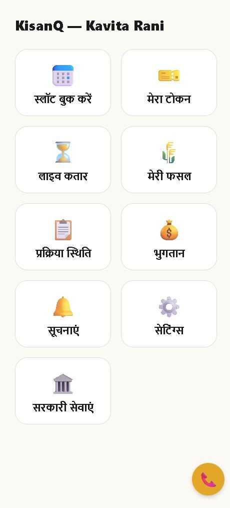
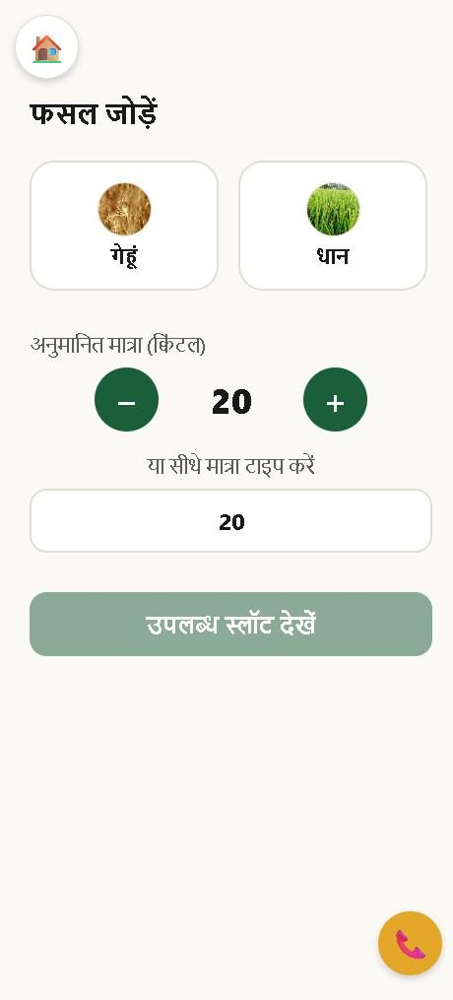
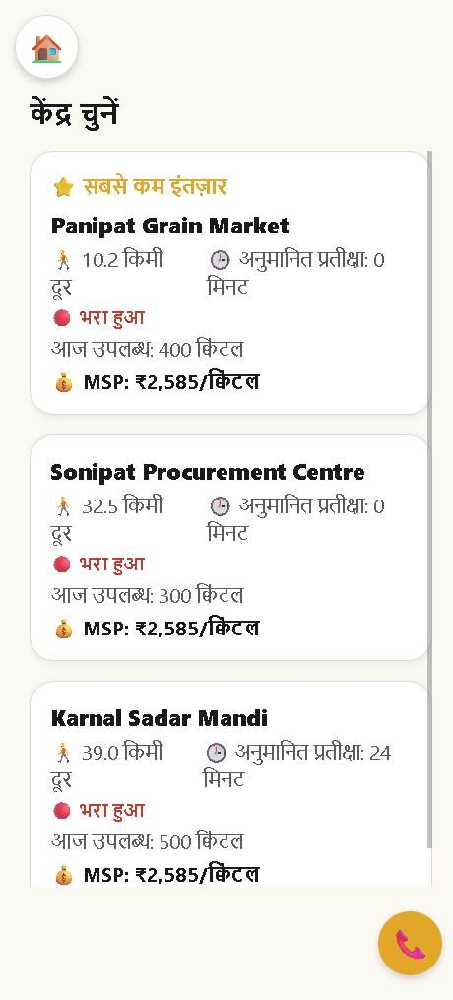
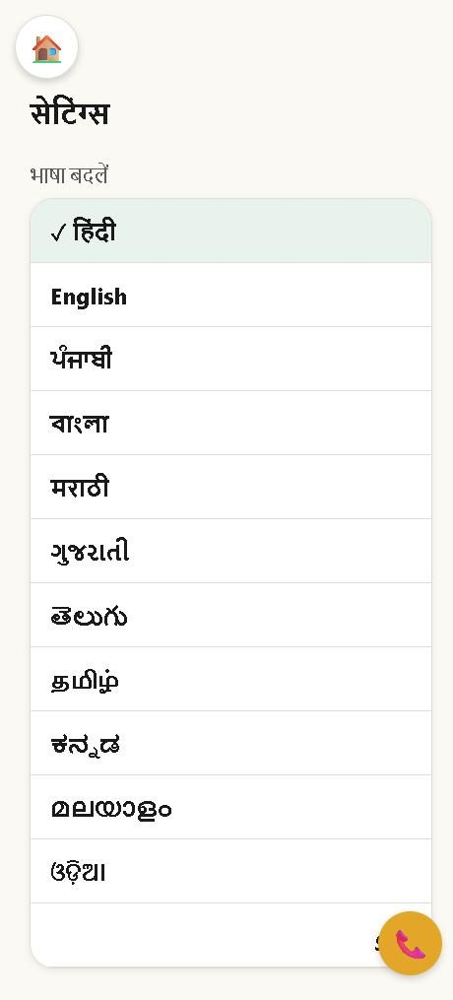

<title>KisanQ</title>
<meta name="claude:viewport-fit-sides" content="cover">
<link rel="preconnect" href="https://fonts.googleapis.com">
<link rel="preconnect" href="https://fonts.gstatic.com" crossorigin>
<link rel="stylesheet" href="https://fonts.googleapis.com/css2?family=Baloo+2:wght@500;600;700;800&family=Noto+Sans:wght@400;500;600;700&family=Roboto+Mono:wght@500;700&display=swap">

<style>
/* Layout: a deep-green masthead carrying the app's own token slip, then light bands that each
   answer one of the three questions a farmer cannot answer today. The slip recurs as the page's
   motif — it is the object the whole product is built around. */
:root {
  --green:      #1B5E3A;
  --green-deep: #0F3523;
  --green-ink:  #124026;
  --gold:       #E4A628;
  --gold-soft:  #FBF1DC;
  --paper:      #FBF9F4;
  --surface:    #FFFFFF;
  --ink:        #171C19;
  --ink-soft:   #5A6560;
  --line:       #E3DFD4;
  --slip:       #FFFDF7;

  --display: "Baloo 2", "Noto Sans Devanagari", system-ui, sans-serif;
  --body:    "Noto Sans", "Noto Sans Devanagari", system-ui, sans-serif;
  --mono:    "Roboto Mono", ui-monospace, SFMono-Regular, Menlo, monospace;
}
@media (prefers-color-scheme: dark) {
  :root:not([data-theme="light"]) {
    --green:      #4FA877;
    --green-deep: #0A1711;
    --green-ink:  #0E2318;
    --gold:       #F0B948;
    --gold-soft:  #2A2214;
    --paper:      #0D1612;
    --surface:    #13201A;
    --ink:        #ECF1ED;
    --ink-soft:   #9BAAA2;
    --line:       #27362E;
    --slip:       #16241D;
    color-scheme: dark;
  }
}
:root[data-theme="dark"] {
  --green:      #4FA877;
  --green-deep: #0A1711;
  --green-ink:  #0E2318;
  --gold:       #F0B948;
  --gold-soft:  #2A2214;
  --paper:      #0D1612;
  --surface:    #13201A;
  --ink:        #ECF1ED;
  --ink-soft:   #9BAAA2;
  --line:       #27362E;
  --slip:       #16241D;
  color-scheme: dark;
}

* { box-sizing: border-box; }
body {
  margin: 0;
  background: var(--paper);
  color: var(--ink);
  font-family: var(--body);
  font-size: 16px;
  line-height: 1.6;
  -webkit-font-smoothing: antialiased;
}
h1, h2, h3 { font-family: var(--display); font-weight: 700; line-height: 1.15; margin: 0; text-wrap: balance; }
p { margin: 0; }
a { color: inherit; }
img { display: block; max-width: 100%; }

.band { width: 100%; }
.wrap {
  max-width: 1080px;
  margin-inline: auto;
  padding-left: max(16px, env(safe-area-inset-left, 0px));
  padding-right: max(16px, env(safe-area-inset-right, 0px));
  padding-block: 72px;
}
.wrap.tight { padding-block: 56px; }

.eyebrow {
  font-size: 12px; font-weight: 700; letter-spacing: .14em; text-transform: uppercase;
  color: var(--ink-soft); margin: 0 0 14px;
}

/* ───────────────────────── masthead ───────────────────────── */
.masthead { background: var(--green-deep); color: #F3F7F3; position: relative; overflow: hidden; }
.masthead::after {
  content: ""; position: absolute; inset: 0;
  background: radial-gradient(120% 90% at 85% 0%, rgba(228,166,40,.13), transparent 58%);
  pointer-events: none;
}
.masthead .wrap { position: relative; z-index: 1; display: grid; gap: 48px; grid-template-columns: 1.15fr .85fr; align-items: center; }
.brandline { display: flex; align-items: center; gap: 10px; margin-bottom: 30px; }
.brandmark {
  font-family: var(--display); font-size: 25px; font-weight: 800; letter-spacing: -.01em; color: #fff;
}
.brandmark b { color: var(--gold); font-weight: 800; }
.sih {
  font-family: var(--mono); font-size: 11px; letter-spacing: .08em; color: #A9C4B4;
  border: 1px solid rgba(255,255,255,.22); border-radius: 999px; padding: 3px 10px;
}
.masthead h1 { font-size: clamp(34px, 5.6vw, 56px); color: #fff; letter-spacing: -.015em; }
.masthead h1 em { font-style: normal; color: var(--gold); }
.lede { margin-top: 18px; font-size: 17px; color: #BCD2C5; max-width: 34em; }

.asks { margin-top: 28px; display: grid; gap: 9px; }
.ask { display: flex; align-items: baseline; gap: 11px; font-size: 16px; color: #D7E6DC; }
.ask span:first-child { color: var(--gold); font-family: var(--mono); font-size: 12px; padding-top: 2px; }

.cta-row { margin-top: 34px; display: flex; flex-wrap: wrap; gap: 12px; align-items: center; }
.btn {
  display: inline-flex; align-items: center; gap: 9px;
  font-family: var(--body); font-weight: 700; font-size: 16px; text-decoration: none;
  padding: 14px 24px; border-radius: 10px; border: 2px solid transparent;
  background: var(--gold); color: #1A1200;
  transition: transform .14s ease, box-shadow .14s ease;
}
.btn:hover { transform: translateY(-1px); box-shadow: 0 8px 22px rgba(0,0,0,.28); }
.btn.ghost { background: transparent; border-color: rgba(255,255,255,.3); color: #EAF2EC; }
.btn:focus-visible, a:focus-visible { outline: 3px solid var(--gold); outline-offset: 3px; }
.apk-note { font-size: 13px; color: #9FBCAC; margin-top: 12px; font-family: var(--mono); }

/* the token slip — the object the product is built around, reused as the install card */
.slip {
  background: var(--slip); color: var(--ink);
  border-radius: 14px; padding: 26px 24px 22px;
  box-shadow: 0 24px 50px rgba(0,0,0,.34);
  position: relative; max-width: 320px; margin-inline: auto; width: 100%;
}
.slip::before {
  content: ""; position: absolute; left: 18px; right: 18px; top: 74px; height: 0;
  border-top: 2px dashed var(--line);
}
.slip-head { display: flex; justify-content: space-between; align-items: flex-start; gap: 10px; }
.slip-label { font-size: 11px; letter-spacing: .13em; text-transform: uppercase; color: var(--ink-soft); font-weight: 700; }
.slip-token { font-family: var(--mono); font-weight: 700; font-size: 27px; color: var(--green); letter-spacing: .02em; margin-top: 2px; }
.slip-centre { font-size: 12px; color: var(--ink-soft); }
.slip-qr { margin-top: 36px; }
.slip-qr img { width: 100%; border-radius: 8px; }
.slip-foot { margin-top: 14px; text-align: center; font-size: 13px; color: var(--ink-soft); line-height: 1.45; }
.slip-foot b { color: var(--ink); font-weight: 700; display: block; font-size: 14px; }

/* ───────────────────────── answers ───────────────────────── */
.answers { display: grid; gap: 20px; grid-template-columns: repeat(3, 1fr); margin-top: 34px; }
.answer { background: var(--surface); border: 1px solid var(--line); border-radius: 14px; padding: 24px 22px; min-width: 0; }
.answer .q { font-family: var(--display); font-size: 20px; font-weight: 700; color: var(--green); }
.answer .qen { font-size: 13px; color: var(--ink-soft); margin-top: 2px; }
.answer .a { margin-top: 14px; font-size: 15px; }
.answer .tag {
  display: inline-block; margin-top: 15px; font-family: var(--mono); font-size: 11px; letter-spacing: .06em;
  background: var(--gold-soft); color: var(--ink); padding: 4px 9px; border-radius: 5px;
}

/* ───────────────────────── the moment ───────────────────────── */
.moment { background: var(--green-ink); color: #EAF2EC; }
.moment h2 { font-size: clamp(26px, 3.6vw, 38px); color: #fff; }
.moment .lede { color: #AEC8B9; max-width: 44em; }
.flow { margin-top: 42px; display: grid; grid-template-columns: 1fr auto 1fr; gap: 22px; align-items: center; }
.panel { background: rgba(255,255,255,.055); border: 1px solid rgba(255,255,255,.14); border-radius: 13px; padding: 20px; min-width: 0; }
.panel h3 { font-size: 13px; letter-spacing: .1em; text-transform: uppercase; color: #9FBCAC; font-family: var(--body); font-weight: 700; }
.readout { margin-top: 16px; display: grid; gap: 10px; }
.field { display: flex; justify-content: space-between; align-items: baseline; gap: 12px; font-size: 14px; }
.field span:first-child { color: #9FBCAC; }
.field span:last-child { font-family: var(--mono); font-weight: 700; color: #fff; font-variant-numeric: tabular-nums; }
.field.hit span:last-child { color: var(--gold); }
.steps { margin-top: 16px; display: grid; gap: 7px; }
.step { display: flex; align-items: center; gap: 9px; font-size: 14px; color: #87A496; }
.step.done { color: #EAF2EC; }
.step.now { color: var(--gold); font-weight: 700; }
.step i { font-style: normal; width: 17px; text-align: center; }
.arrow { text-align: center; color: var(--gold); }
.arrow .lab { font-family: var(--mono); font-size: 11px; letter-spacing: .08em; display: block; margin-bottom: 5px; }
.arrow .gl { font-size: 26px; line-height: 1; }
.claim { margin-top: 38px; font-family: var(--display); font-size: clamp(19px, 2.6vw, 27px); font-weight: 700; color: #fff; text-wrap: balance; }
.claim em { font-style: normal; color: var(--gold); }

/* ───────────────────────── screens ───────────────────────── */
.shots { margin-top: 36px; display: grid; grid-template-columns: repeat(4, 1fr); gap: 22px; }
.shot { min-width: 0; }
.phone {
  background: #1C1C1C; border-radius: 22px; padding: 7px;
  box-shadow: 0 16px 34px rgba(16,30,22,.2);
}
.phone img { border-radius: 16px; width: 100%; }
.shot p { margin-top: 13px; font-size: 14px; color: var(--ink-soft); }
.shot b { display: block; color: var(--ink); font-size: 15px; font-weight: 700; font-family: var(--display); }

/* ───────────────────────── portals ───────────────────────── */
.portals { display: grid; grid-template-columns: repeat(3, 1fr); gap: 20px; margin-top: 32px; }
.portal { border: 1px solid var(--line); border-radius: 14px; padding: 24px 22px; background: var(--surface); min-width: 0; }
.portal h3 { font-size: 19px; }
.portal .who { font-size: 12px; letter-spacing: .1em; text-transform: uppercase; color: var(--gold); font-weight: 700; font-family: var(--body); margin-bottom: 7px; }
.portal ul { margin: 14px 0 0; padding-left: 18px; display: grid; gap: 7px; font-size: 15px; color: var(--ink-soft); }

/* ───────────────────────── status table ───────────────────────── */
.status { margin-top: 30px; border: 1px solid var(--line); border-radius: 14px; overflow: hidden; background: var(--surface); }
.srow { display: grid; grid-template-columns: 170px 1fr; gap: 18px; padding: 16px 22px; border-top: 1px solid var(--line); align-items: start; }
.srow:first-child { border-top: 0; }
.srow dt { font-weight: 700; font-size: 14px; display: flex; align-items: center; gap: 8px; min-width: 0; }
.srow dd { margin: 0; font-size: 15px; color: var(--ink-soft); min-width: 0; }
.dot { width: 9px; height: 9px; border-radius: 50%; flex: none; }
.dot.live { background: var(--green); }
.dot.sim  { background: var(--gold); }
.dot.todo { background: var(--line); border: 1px solid var(--ink-soft); }

/* ───────────────────────── install ───────────────────────── */
.install { background: var(--green-deep); color: #EAF2EC; }
.install .wrap { display: grid; grid-template-columns: 1fr 320px; gap: 48px; align-items: center; }
.install h2 { color: #fff; font-size: clamp(26px, 3.6vw, 38px); }
.install ol { margin: 22px 0 0; padding-left: 20px; display: grid; gap: 10px; color: #BCD2C5; font-size: 15px; max-width: 36em; }
.install ol b { color: #fff; }
.copybox { margin-top: 24px; display: flex; flex-wrap: wrap; gap: 10px; align-items: center; }
.link {
  font-family: var(--mono); font-size: 12px; color: #BCD2C5; background: rgba(0,0,0,.26);
  border: 1px solid rgba(255,255,255,.14); border-radius: 8px; padding: 9px 12px;
  overflow-wrap: anywhere; min-width: 0; flex: 1 1 260px;
}
.copybtn {
  font-family: var(--body); font-weight: 700; font-size: 14px; cursor: pointer;
  background: transparent; color: #EAF2EC; border: 1px solid rgba(255,255,255,.3);
  border-radius: 8px; padding: 10px 16px;
}
.copybtn:hover { background: rgba(255,255,255,.08); }

/* ───────────────────────── footer ───────────────────────── */
.foot { background: var(--green-ink); color: #8FAD9D; border-top: 1px solid rgba(255,255,255,.1); }
.foot .wrap { padding-block: 34px; display: flex; flex-wrap: wrap; gap: 18px; justify-content: space-between; align-items: center; font-size: 14px; }
.foot a { color: #CFE2D6; }
.foot .who { color: #EAF2EC; font-weight: 700; }

@media (max-width: 900px) {
  .masthead .wrap, .install .wrap { grid-template-columns: 1fr; gap: 36px; }
  .answers, .portals { grid-template-columns: 1fr; }
  .shots { grid-template-columns: repeat(2, 1fr); }
  .flow { grid-template-columns: 1fr; }
  .arrow .gl { transform: rotate(90deg); display: inline-block; }
}
@media (max-width: 520px) {
  .wrap { padding-block: 52px; }
  .shots { grid-template-columns: 1fr; gap: 28px; }
  .phone { max-width: 290px; margin-inline: auto; }
  .shot p, .shot b { text-align: center; }
  .srow { grid-template-columns: 1fr; gap: 6px; }
}
@media (prefers-reduced-motion: reduce) {
  * { animation: none !important; transition: none !important; }
}
</style>

<header class="band masthead">
  <div class="wrap">
    <div>
      <div class="brandline">
        <span class="brandmark">Kisan<b>Q</b></span>
        <span class="sih">SIH26032</span>
      </div>

      <h1>The mandi queue, <em>finally visible</em> from the farmer's side.</h1>

      <p class="lede">
        A farmer reaches the procurement mandi before dawn and waits without knowing when their
        turn comes, what weight was written against their crop, or when the money will arrive.
        KisanQ answers all three, live, on their own phone.
      </p>

      <div class="asks">
        <p class="ask"><span>01</span><span>कब नंबर आएगा? — when is my turn?</span></p>
        <p class="ask"><span>02</span><span>कितना तौला, कौन सा ग्रेड? — what weight and grade were recorded?</span></p>
        <p class="ask"><span>03</span><span>पैसा कब आएगा? — when will I be paid?</span></p>
      </div>

      <div class="cta-row">
        <a class="btn" id="dl-top" href="https://expo.dev/artifacts/eas/udonVre5BrOoEU3EPIg9Hn8B1vAV6yZvcxnRBKDKtlI.apk">
          ↓ Download for Android
        </a>
        <a class="btn ghost" href="https://kisanq-farmer.web.app">Open the staff portal</a>
      </div>
      <p class="apk-note">APK · ~110 MB · Android 7+ · no Play Store needed</p>
    </div>

    <div class="slip">
      <div class="slip-head">
        <div>
          <div class="slip-label">आपका टोकन</div>
          <div class="slip-token">KSN-1048</div>
          <div class="slip-centre">Karnal Sadar Mandi</div>
        </div>
      </div>
      <div class="slip-qr">
        
      </div>
      <p class="slip-foot">
        <b>Scan to install</b>
        Same gesture as the token at the mandi gate.
      </p>
    </div>
  </div>
</header>

<section class="band">
  <div class="wrap">
    <p class="eyebrow">What the farmer gets</p>
    <h2 style="font-size:clamp(26px,3.6vw,38px)">Three questions, three answers</h2>

    <div class="answers">
      <article class="answer">
        <p class="q">कब नंबर आएगा?</p>
        <p class="qen">When is my turn?</p>
        <p class="a">
          Book a mandi slot up to two days ahead, then watch a live count of how many farmers are
          still ahead of you. It drops on its own as the operator works through the queue.
        </p>
        <span class="tag">आपसे पहले 2 लोग</span>
      </article>

      <article class="answer">
        <p class="q">कितना तौला गया?</p>
        <p class="qen">What weight and grade?</p>
        <p class="a">
          The weight, moisture and grade an operator records reach the farmer's phone in the same
          second, with the full payment arithmetic: weight × MSP, minus any moisture deduction and
          the rule it came from.
        </p>
        <span class="tag">19.4 क्विंटल · ग्रेड A</span>
      </article>

      <article class="answer">
        <p class="q">पैसा कब आएगा?</p>
        <p class="qen">When will I be paid?</p>
        <p class="a">
          A date, not an open-ended "in process". The payment moves through Quality accepted →
          J-Form generated → Payment sent → Credited, and the farmer sees which stage it is on.
        </p>
        <span class="tag">अपेक्षित तारीख: +3 दिन</span>
      </article>
    </div>
  </div>
</section>

<section class="band moment">
  <div class="wrap">
    <p class="eyebrow" style="color:#9FBCAC">The core of it</p>
    <h2>What the operator types, the farmer sees.</h2>
    <p class="lede">
      Every other system tells a farmer what happened afterwards, on paper, at a counter. Here the
      weighing and the grading become visible to them at the instant they are recorded.
    </p>

    <div class="flow">
      <div class="panel">
        <h3>Operator · mandi counter</h3>
        <div class="readout">
          <p class="field"><span>Token</span><span>KSN-1048</span></p>
          <p class="field"><span>Expected</span><span>20.0 qtl</span></p>
          <p class="field hit"><span>Actual weight</span><span>19.4 qtl</span></p>
          <p class="field"><span>Moisture</span><span>13.5 %</span></p>
          <p class="field"><span>MSP (wheat)</span><span>₹2,585</span></p>
          <p class="field hit"><span>Payable</span><span>₹49,407</span></p>
        </div>
      </div>

      <div class="arrow" aria-hidden="true">
        <span class="lab">same second</span>
        <span class="gl">→</span>
      </div>

      <div class="panel">
        <h3>Farmer · प्रक्रिया स्थिति</h3>
        <div class="steps">
          <p class="step done"><i>✓</i> स्लॉट बुक हुआ</p>
          <p class="step done"><i>✓</i> पहुंच गए</p>
          <p class="step now"><i>✓</i> तौल हुई — 19.4 क्विंटल</p>
          <p class="step"><i>○</i> जांच हुई</p>
          <p class="step"><i>○</i> स्वीकार हुआ</p>
          <p class="step"><i>○</i> भुगतान</p>
        </div>
      </div>
    </div>

    <p class="claim">
      It does not make a wrong weight impossible. It makes one <em>visible</em>, time-stamped, and
      arguable — on the spot, by the person it costs.
    </p>
  </div>
</section>

<section class="band">
  <div class="wrap">
    <p class="eyebrow">The app itself</p>
    <h2 style="font-size:clamp(26px,3.6vw,38px)">Built for the phone it will actually run on</h2>

    <div class="shots">
      <figure class="shot" style="margin:0">
        <div class="phone"></div>
        <p><b>One tap from home</b>Nine tiles, no menus, every action reachable at once.</p>
      </figure>
      <figure class="shot" style="margin:0">
        <div class="phone"></div>
        <p><b>Photographs, not labels</b>Crops are picked by sight, with a stepper instead of typing.</p>
      </figure>
      <figure class="shot" style="margin:0">
        <div class="phone"></div>
        <p><b>Compare before you travel</b>Live wait, remaining buying capacity and the MSP, per mandi.</p>
      </figure>
      <figure class="shot" style="margin:0">
        <div class="phone"></div>
        <p><b>Twelve languages</b>Hindi by default; the choice is the very first screen and it sticks.</p>
      </figure>
    </div>
  </div>
</section>

<section class="band">
  <div class="wrap tight">
    <p class="eyebrow">How it fits together</p>
    <h2 style="font-size:clamp(26px,3.6vw,38px)">One live database, three portals</h2>

    <div class="portals">
      <article class="portal">
        <p class="who">Farmer</p>
        <h3>Android app</h3>
        <ul>
          <li>Aadhaar-OTP registration</li>
          <li>Slot booking and a QR token</li>
          <li>Live queue position</li>
          <li>Weight, grade and payment stage</li>
          <li>Raise an objection on a weighing</li>
        </ul>
      </article>
      <article class="portal">
        <p class="who">Mandi operator</p>
        <h3>Browser, no install</h3>
        <ul>
          <li>QR scan, or type the token by hand</li>
          <li>Live queue management</li>
          <li>Weighing: expected vs actual</li>
          <li>Quality check: moisture, grade, rate</li>
          <li>Accept or reject, with a reason</li>
        </ul>
      </article>
      <article class="portal">
        <p class="who">Department</p>
        <h3>Admin console</h3>
        <ul>
          <li>Load and wait time per centre</li>
          <li>Overload flag above 80% utilisation</li>
          <li>Daily buying capacity per crop</li>
          <li>Payment stages and objections</li>
          <li>Add a commodity without a release</li>
        </ul>
      </article>
    </div>
  </div>
</section>

<section class="band">
  <div class="wrap tight">
    <p class="eyebrow">Stated plainly</p>
    <h2 style="font-size:clamp(26px,3.6vw,38px)">What is working, and what is not</h2>

    <dl class="status">
      <div class="srow">
        <dt><span class="dot live"></span> Working</dt>
        <dd>
          Installable Android app, live web portal, a real cloud database with real-time
          listeners, server-side security rules, and the whole flow end to end — booking,
          check-in, weighing, quality check, payment stages, objections.
        </dd>
      </div>
      <div class="srow">
        <dt><span class="dot sim"></span> Mocked</dt>
        <dd>
          Aadhaar and OTP. No UIDAI API is contacted, and the Aadhaar number is never stored —
          only a reference token.
        </dd>
      </div>
      <div class="srow">
        <dt><span class="dot sim"></span> Simulated</dt>
        <dd>Payments. The stages, amounts and dates are real records; no money moves.</dd>
      </div>
      <div class="srow">
        <dt><span class="dot todo"></span> Designed, not built</dt>
        <dd>
          SMS and IVR for farmers without a smartphone. Every notification is already written to an
          SMS log, ready for a gateway.
        </dd>
      </div>
    </dl>
  </div>
</section>

<section class="band install">
  <div class="wrap">
    <div>
      <p class="eyebrow" style="color:#9FBCAC">Try it</p>
      <h2>Four minutes, start to finish</h2>
      <ol>
        <li><b>Scan the code</b> or tap Download. The APK is about 110 MB — use Wi-Fi.</li>
        <li><b>Open the file.</b> Android asks to allow installs from your browser; allow it.</li>
        <li><b>Any 12-digit number</b> works as the Aadhaar. The OTP is <b>123456</b>, printed on the screen.</li>
        <li><b>Book a slot</b>, then open the staff portal on a laptop and watch the two screens move together.</li>
      </ol>

      <div class="copybox">
        <code class="link" id="apk-url">https://expo.dev/artifacts/eas/udonVre5BrOoEU3EPIg9Hn8B1vAV6yZvcxnRBKDKtlI.apk</code>
        <button class="copybtn" id="copy" type="button">Copy link</button>
      </div>
    </div>

    <div class="slip">
      <div class="slip-head">
        <div>
          <div class="slip-label">KisanQ</div>
          <div class="slip-token">APK</div>
          <div class="slip-centre">Android · no Play Store</div>
        </div>
      </div>
      <div class="slip-qr">
        
      </div>
      <p class="slip-foot">
        <b>Point your camera here</b>
        Download starts straight away.
      </p>
    </div>
  </div>
</section>

<footer class="band foot">
  <div class="wrap">
    <p><span class="who">Team CodeCrew</span> · Smart India Hackathon 2026 · Problem statement SIH26032</p>
    <p>Staff portal: <a href="https://kisanq-farmer.web.app">kisanq-farmer.web.app</a></p>
  </div>
</footer>

<script>
  (function () {
    var btn = document.getElementById("copy");
    var url = document.getElementById("apk-url");
    if (!btn || !url) return;
    btn.addEventListener("click", function () {
      var text = url.textContent.trim();
      var done = function () {
        btn.textContent = "Copied";
        setTimeout(function () { btn.textContent = "Copy link"; }, 1800);
      };
      // Clipboard access is refused in some embedded views; fall back to selecting the text so
      // the reader can still copy it with the keyboard.
      if (navigator.clipboard && navigator.clipboard.writeText) {
        navigator.clipboard.writeText(text).then(done, select);
      } else {
        select();
      }
      function select() {
        var r = document.createRange();
        r.selectNodeContents(url);
        var s = window.getSelection();
        s.removeAllRanges();
        s.addRange(r);
        btn.textContent = "Press Ctrl/Cmd+C";
        setTimeout(function () { btn.textContent = "Copy link"; }, 2600);
      }
    });
  })();
</script>
